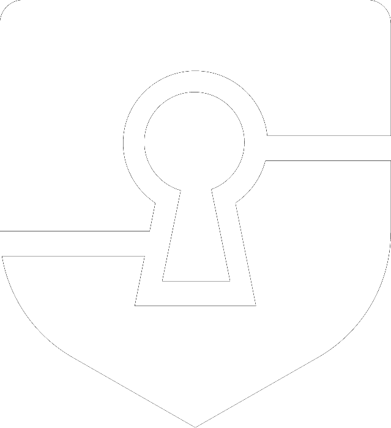

Leave a Trace. Let It Fade.
How teams and coding agents coordinate through what they write down.
Sample content from a Wawandco post.

How teams and coding agents coordinate through what they write down.
The retry loop was there on purpose, after the payment provider sent duplicate events during an incident.
One worker's action leaves a mark in a shared environment. The mark prompts the next worker's action.
Grassé, 1959 · Goss et al., 1989 · Heylighen, 2016
The work is the signal. It says exactly what the system does.
A separate signal that carries the reasoning code can't.
A reversed decision stays in the log, marked superseded, with a link to its replacement.
Once the work ships, archive the spec or remove it.
Scan on a schedule for docs that no longer match the code.
Strengthen the traces people and agents keep needing.